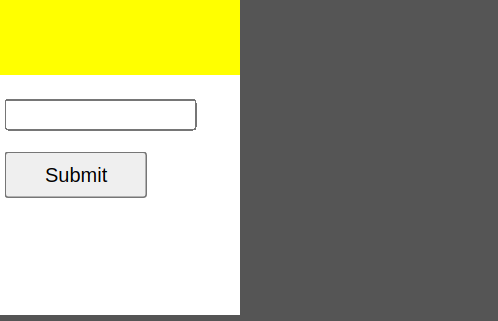
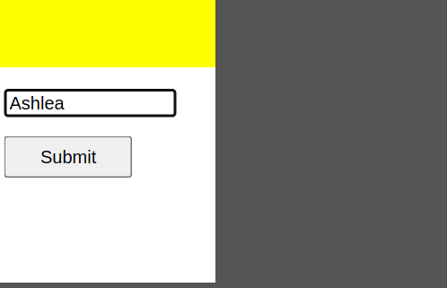

GUI-Recover trajectory

{
"event": "reset",
"goal": "Enter \"Ashlea\" into the text field and press Submit.",
"screenshot": "0000.png",
"sha256": "44bac244e4c20bf5c34da78049e90eda0f27b3ac8a1c5a7e1079fab69b187769"
}{
"event": "candidate_prediction",
"raw": "[0.21, 0.32]",
"action": {
"action": "INPUT",
"value": "Ashlea",
"position": [
0.21,
0.32
]
},
"input_query": "text field"
}
{
"event": "candidate_action",
"action": {
"action": "INPUT",
"value": "Ashlea",
"position": [
0.21,
0.32
]
},
"reward": 0.0,
"terminated": false,
"truncated": false,
"screenshot": "0001.png",
"sha256": "8498074985f6a3b41d3a63af88b82820d01507d09baeeea41289f077541d4946"
}{
"event": "submit_prediction",
"prediction": {
"raw": "[0.21,0.32]",
"point": [
0.21,
0.32
],
"input_query": "Submit button\nPrevious proposed action: {\"action\":\"INPUT\",\"value\":\"Ashlea\",\"position\":[0.21,0.32]}\nRecheck the current screenshot and return the target location.",
"inference_seconds": 0.4439859427511692
}
}
{
"event": "submit_action",
"action": {
"action": "CLICK",
"value": null,
"position": [
0.21,
0.32
]
},
"reward": 0.0,
"terminated": false,
"truncated": false,
"screenshot": "0002.png",
"sha256": "8498074985f6a3b41d3a63af88b82820d01507d09baeeea41289f077541d4946"
}{
"event": "episode_end",
"id": "enter-text-6000-normal_entry",
"task": "enter-text",
"seed": 6000,
"head": "history_history",
"conditional": false,
"success": false,
"reason": "task_not_completed",
"source_steps": 0,
"repair_steps": 2,
"resets_after_failure": 0,
"source_model_calls_reused": 0,
"candidate_model_calls_reused": 1,
"additional_submit_calls": 1,
"prefix_matched": true,
"total_logical_model_calls": 2,
"recovery_mode": null
}